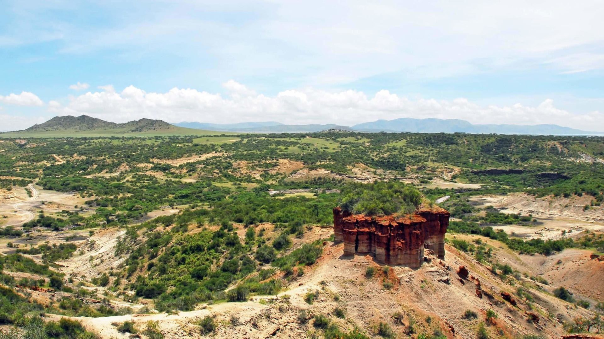
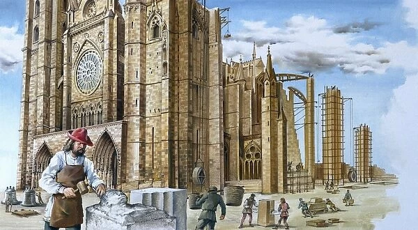
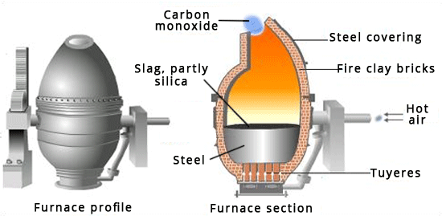

When Did Construction Really Begin?
Tracing the history of construction can be tricky since there’s no clear definition of what exactly constitutes construction. For example, can we consider pit-houses construction? What about grass shelters? Early humans manipulated their environment to protect themselves from the elements in a number of ways. These were usually temporary structures like lean-tos or windbreaks. Tools were made from animal bones and stone. Building materials included sticks and branches, grass, mud, and animal skins.
The temporary nature of prehistoric structures means that most evidence has long been lost to the elements. Archaeologists and historians can only make assumptions based on the clues left behind. And the earliest example of one of these clues is at the Olduvai Gorge in Tanzania. There, archaeologists discovered a 1.8 million-year-old stone circle that resembles the foundations of stick or grass huts built by hunter-gatherers.If the Olduvai Gorge site is the first evidence of construction, it predates modern humans, meaning that construction is older than mankind as we know it. However, this is disputed, as some experts say it’s hard to know how the stone formation at Olduvai Gorge was used. Instead, many historians say that the first evidence of man-made shelter is in Terra Amata, France. Dating back to 400,000 B.C., these temporary huts likely provided shelter for early humans to use during the hunting season. Experts also agree that the earliest evidence of large-scale buildings is in Mesopotamia. In addition to dwellings, the Mesopotamians built palaces, temples, and ziggurats, often using advanced bricklaying techniques.
Mesopotamia is also home to civilization’s oldest known roads. In the cities of Ur and Babylon, archaeologists uncovered paved roads dating back to 4000 B.C., which were primarily used for trade. Ancient Egypt, Greece, Rome, and China also made significant advances in construction. The pyramids of Egypt, the temples of Greece, and the imperial palaces of China continue to marvel and inspire us to this day. Imhotep, who lived circa 2650–2600 B.C., is often regarded as the first known engineer and architect. The 50,000-mile-long Roman road system stretched from Britain to Syria, and was remarkable because of the Romans’ obsession with creating the straightest possible routes between cities in their massive empire.
The Ancient Ways of Building Things
Prehistoric building techniques also underwent significant developments in the Neolithic Revolution. Nothing is known of the building ability of Paleolithic peoples beyond what can be inferred from a few fragments of stone shelters, but in the New Stone Age some impressive structures were erected, primarily tombs and burial mounds and other religious edifices, but also, toward the end of the period, domestic housing in which sun-dried brick was first used. In northern Europe, where the Neolithic transformation began later than around the eastern Mediterranean and lasted longer, huge stone monuments, of which Stonehenge in England is the outstanding example, still bear eloquent testimony to the technical skill, not to mention the imagination and mathematical competence, of the later Stone Age societies.
In building technology the major developments concerned the scale of operations rather than any particular innovation. The late Stone Age communities of Mesopotamia had already built extensively in sun-dried brick. Their successors continued the technique but extended its scale to construct the massive square temples called ziggurats. These had a core and facing of bricks, the facing walls sloping slightly inward and broken by regular pilasters built into the brickwork, the whole structure ascending in two or three stages to a temple on the summit. Sumerians were also the first to build columns with brick made from local clay, which also provided the writing material for the scribes.
In Egypt, clay was scarce but good building stone was plentiful, and builders used it in constructing the pyramids and temples that remain today as outstanding monuments of Egyptian civilization. Stones were pulled on rollers and raised up the successive stages of the structure by ramps and by balanced levers adapted from the water-raising shadoof. The stones were shaped by skilled masons, and they were placed in position under the careful supervision of priest-architects who were clearly competent mathematicians and astronomers, as is evident from the precise astronomical alignments. It seems certain that the heavy labour of construction fell upon armies of slaves, which helps to explain both the achievements and limitations of early civilizations. Slaves were usually one of the fruits of military conquest, which presupposes a period of successful territorial expansion, although their status as a subject race could be perpetuated indefinitely. Slave populations provided a competent and cheap labour force for the major constructional works that have been described. On the other hand, the availability of slave labour discouraged technological innovation, a social fact that goes far toward explaining the comparative stagnation of mechanical invention in the ancient world.
Though many buildings of the Greeks survive as splendid monuments to the civilized communities that built them, as technological monuments they are of little significance. The Greeks adopted a form of column and lintel construction that had been used in Egypt for centuries and was derived from experience of timber construction. In no major sense did Greek building constitute a technological innovation. The Romans copied the Greek style for most ceremonial purposes, but in other respects they were important innovators in building technology. They made extensive use of fired brick and tile as well as stone; they developed a strong cement that would set under water; and they explored the architectural possibilities of the arch, the vault, and the dome. They then applied these techniques in amphitheatres, aqueducts, tunnels, bridges, walls, lighthouses, and roads. Taken together, these constructional works may fairly be regarded as the primary technological achievement of the Romans.


Innovations from the Middle Ages
Fortifications, castles and cathedrals were the greatest construction projects. The Middle Ages began with the end of the Roman era and many Roman building techniques were lost. But some Roman techniques, including the use of iron ring-beams, appear to have been used in the Palatine Chapel at Aachen, c. 800 AD, where it is believed builders from the Lombard Kingdom in northern Italy contributed to the work. A revival of stone buildings in the 9th century and the Romanesque style of architecture began in the late 11th century.
The Middle Ages of Europe span from the 5th to 15th centuries AD, from the fall of the Western Roman Empire to the Renaissance, and is divided into Pre-Romanesque and Romanesque periods. The downfall of the Roman empire led to a decline in building activities and technology. Construction efforts were mostly done by the Roman Catholic Church. Craft training and education became a major focus in this period and craft guilds were organized. Also notable are the stave churches in Scandinavia.
Materials
Most buildings in Northern Europe were constructed of timber until c. 1000 AD. In Southern Europe adobe remained predominant. Brick continued to be manufactured in Italy throughout the period 600–1000 AD but elsewhere the craft of brick-making had largely disappeared and with it the methods for burning tiles. Roofs were largely thatched. Houses were small and gathered around a large communal hall. Monasticism spread more sophisticated building techniques. The Cistercians may have been responsible for reintroducing brick-making to the area from the Netherlands, through Denmark and Northern Germany to Poland leading to Backsteingotik. Brick remained the most popular prestige material in these areas throughout the period. Elsewhere buildings were typically in timber or where it could be afforded, stone. Medieval stone walls were constructed using cut blocks on the outside of the walls and rubble infill, with weak lime mortars. The poor hardening properties of these mortars were a continual problem, and the settlement of the rubble filling of Romanesque and Gothic walls and piers is still a major cause for concern.
Designs ♖
There were no standard textbooks on building in the Middle Ages. Master craftsmen transferred their knowledge through apprenticeships and from father to son. Trade secrets were closely guarded, as they were the source of a craftsman's livelihood. Drawings only survive from the later period. Parchment was too expensive to be commonly used and paper did not appear until the end of the period. Models were used for designing structures and could be built to large scales. Details were mostly designed at full size on tracing floors, some of which survive.
Techniques ♘
Romanesque buildings of the period 600–1100 AD were entirely roofed in timber or had stone barrel vaults covered by timber roofs. The Gothic style of architecture with its vaults, flying buttresses and pointed gothic arches developed in the twelfth century, and in the centuries that followed ever more incredible feats of constructional daring were achieved in stone. Thin stone vaults and towering buildings were constructed using rules derived by trial and error. Failures were frequent, particularly in difficult areas such as crossing towers.
Achievements ♔
The scale of fortifications and castle building in the Middle Ages was remarkable, but the outstanding buildings of the period were the Gothic cathedrals with thin masonry vaults and walls of glass. Outstanding examples are: Beauvais Cathedral, Chartres Cathedral, King's College Chapel and Notre Dame, Paris.
The Industrial Revolution
As more people settled in cities, the scale and scope of construction grew. Humans built increasingly sophisticated permanent structures where they could live, work, and gather together, as well as the infrastructure to support sedentary living. Implementing these projects required engineers and architects, coordination of materials, as well as rules to guide construction, and the industry as we know it began to take shape.
Architecture and engineering began to be viewed as separate professions that required specialized education. Andrea Palladio (born 1508 A.D.) is widely regarded as the first modern architect. Known for experimentation and use of materials to suit his clients’ needs, Palladio designed palaces and country estates for Italian nobles. His work heavily influenced the architects that followed, with his use of a classical temple facade as a roofed entrance porch being the most notable.
John Smeaton (born 1724 A.D.) is often referred to as the “father of civil engineering,” and is most well-known for his water, roads, bridges, and millworks projects. His most famous project is the Eddystone Lighthouse in Cornwall, United Kingdom, which was the first structure of its kind to be built with interlocking stone. He also founded the first engineering society in the world, the Society of Civil Engineers.
For large civil-engineering works, the heavy work of moving earth continued to depend throughout this period on human labour organized by building contractors. But the use of gunpowder, dynamite, and steam diggers helped to reduce this dependence toward the end of the 19th century, and the introduction of compressed air and hydraulic tools also contributed to the lightening of drudgery. The latter two inventions were important in other respects, such as in mining engineering and in the operation of lifts, lock gates, and cranes. The rise of the construction profession coincided with the rise of modern science in the 17th and 18th centuries. Scientific breakthroughs enabled architects and engineers to experiment with a wider array of materials and forms. Combined with the technological advances made during the industrial revolution in the 19th century, these innovations sparked a wave of change in construction.
In 1709, Abraham Darby developed a new method of iron smelting that allowed for the mass production of cast iron, setting the foundation for a series of innovations:
- Darby’s grandson oversaw the construction of the first iron bridge, built in the U.K. in 1781. After the 32-yard bridge survived a serious flood in 1795, other builders created their own iron structures.
- As the U.S. expanded rapidly throughout the 19th century, cast iron was the metal of choice for many new structures. From storefronts to water systems, builders widely used cast iron for its low cost, strength, and resistance to fire.
- Cast iron was also the primary material used for railway construction until it was replaced by wrought iron in the 1820s.
The advances in mass production led to the emergence of prefabrication. The first modular homes were conceived in 1830. In the U.S., the Sears Roebuck company sold houses by mail-order up until the 1940s. Builders also used prefabrication for non-residential structures. Made up of glass and cast iron, the Crystal Palace in London was first assembled in 1851. It was then taken down and reassembled in a South London suburb where it remained until it was destroyed by a fire.
One of the most impactful innovations of the Industrial Revolution was the Bessemer process, which made steel production cheaper and more affordable. From 1890 to 1895, up to 80% of steel was produced by the Bessemer process. Iron railways were replaced with steel, and by 1900, you could wrap all of the steel railways around the globe 10 times. While the Brooklyn Bridge, the world’s first major steel suspension bridge, isn’t totally made up of Bessemer steel, its builders benefitted from the overall accessibility of materials. With the introduction of steel girders, buildings could reach new heights. Combined with the invention of mechanized construction equipment and Elisha Otis’ safer design for elevators, Bessemer steel also ushered in the age of skyscrapers. The world’s first skyscraper, Chicago’s Home Insurance Building, was built in 1885. Initially built to be 10 stories high, the building was later expanded to 12 floors in 1890.


The 20th and 21st centuries
Important development occurred in civil engineering in the first half of the 20th century, although there were few striking innovations. Advancing techniques for large-scale construction produced many spectacular skyscrapers, bridges, and dams all over the world but especially in the United States. The city of New York acquired its characteristic skyline, built upon the exploitation of steel frames and reinforced concrete. Conventional methods of building in brick and masonry had reached the limits of feasibility in the 1800s in office blocks up to 16-stories high, and the future lay with the skeleton frame or cage construction pioneered in the 1880s in Chicago. The vital ingredients for the new tall buildings or skyscrapers that followed were abundant cheap steel—for columns, beams, and trusses—and efficient passenger elevators. The availability of these developments and the demand for more and more office space in the thriving cities of Chicago and New York caused the boom in skyscraper building that continued until 1931, when the Empire State Building, with its total height of 1,250 feet (381 metres) and 102 stories, achieved a limit not exceeded for 40 years and demonstrated the strength of its structure by sustaining the crash impact of a B-25 bomber in July 1945 with only minor damage to the building. The Great Depression brought a halt to skyscraper building from 1932 until after World War II.
Skyscraper dominance
In the early 20th century, skyscrapers took off completely, especially in Chicago and New York. During this “first great age” of skyscrapers, a succession of record-breaking skyscrapers were built, as each builder attempted to outdo their predecessors, and companies saw the buildings as extensions of their brand. New York City became home to some of the tallest and most iconic skyscrapers in the world, with the Flatiron Building and the Woolworth Building being two of the most notable. During this period, contractors and engineers also devised methods to improve construction costs and scheduling to make construction more efficient.
Now, massive skyscrapers dot the globe. In the late 20th century, countries in the Eastern hemisphere began building some of the most cutting-edge skyscrapers. Just as Chicago and New York’s builders competed for tallest building during the early and mid-20th century, the 21st century has seen sort of a skyscraper race among Middle Eastern and Eastern countries. The Petronas Twin Towers in Kuala Lumpur were the first record-holders for tallest building outside of the U.S. Taipei 101 in TaiwanIn 2003, they were unseated by Taipei 101 in Taipei, Taiwan. The title is now held by the 2,722-foot-tall Burj Khalifa in Dubai, United Arab Emirates. Aside from height, some of the most innovative skyscraper builders are experimenting with architectural styles, innovative materials, energy efficiency measures, and occupant comfort.
The U.S. housing boom
After World War II, demand for housing exploded in the U.S., driven by the thriving postwar economy, the Baby Boom, and an influx of immigrants. Some of the mass production techniques used in the auto industry were applied to home-building, with one builder creating 30 homes per day. Many of the immigrants driving the housing boom also helped to build new houses. The construction industry has long been a vital lifeline for immigrants in the U.S. Workers from Germany, Ireland, and Asia found construction work after coming to the states, and today 2.2 million construction workers are foreign-born.
Massive infrastructure projects
The housing boom led to the emergence of the suburbs and the highways that support them. Construction began on the US interstate highway system after the signing of the Federal-Aid Highway Act of 1956. It was first conceived by Congress in two reports released in 1939 and 1944, which highlighted a need for a system that would “meet the requirements of the national defense in time of war and the needs of a growing peacetime traffic of longer range.” The Mark Twain Expressway in Missouri was the first project to go under construction under the 1956 act. The U.S. interstate highway system was one of many massive infrastructure projects in the 20th and 21st centuries:
- The Panama Canal, which opened in 1914, was the most expensive construction project in history at that time.
- Connecting France and the UK ,the Channel Tunnel was built in 1994. It consists of three tunnels: two for rail traffic and a central tunnel for services.
- The Three Gorges Dam, completed in 2012 in China, is the world’s largest hydroelectric plant.
Present-Day Construction, and What It Says About the Future
Whether creating a megaproject or single-family home, the construction industry has become increasingly focused on sustainability. Society as a whole has grown more aware of climate change, the depletion of natural resources, and the human impact on natural habitats. Historically, sustainable construction has focused on the operations phase of assets. But the sustainability of construction processes is becoming increasingly important as well. Industry stakeholders are already starting to reduce the environmental impact of construction, and it will continue to be a key focal point in the future.
Digital transformation in construction is picking up, and will play a critical role in solving sustainability and other persistent challenges in the industry. Construction firms are adopting technology to improve efficiency, reduce risk, and make data-driven decisions, challenges that became even more acute during the pandemic.